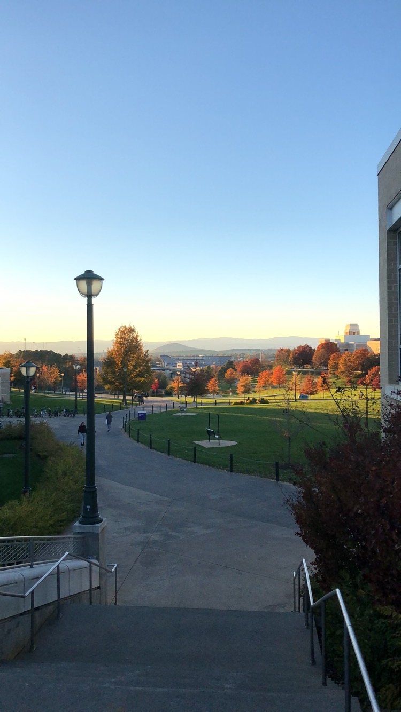
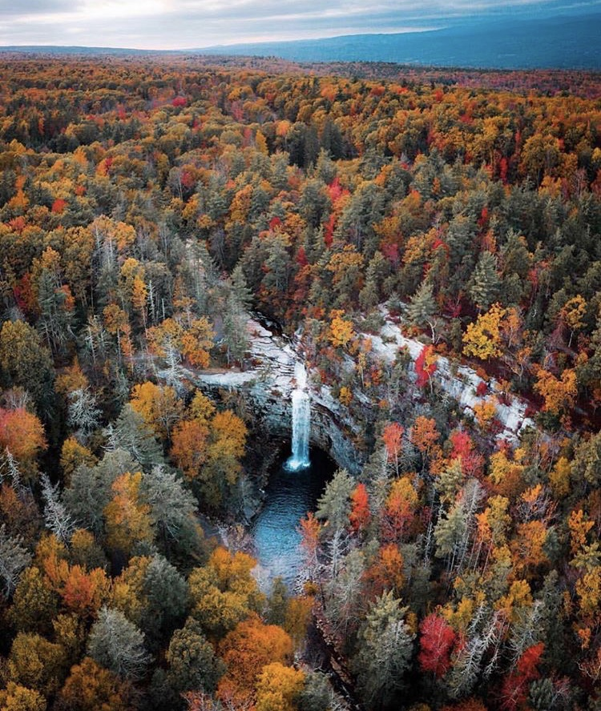
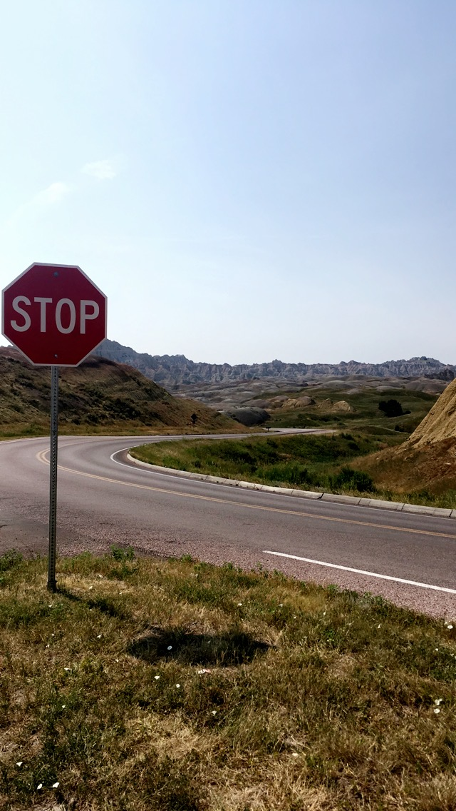
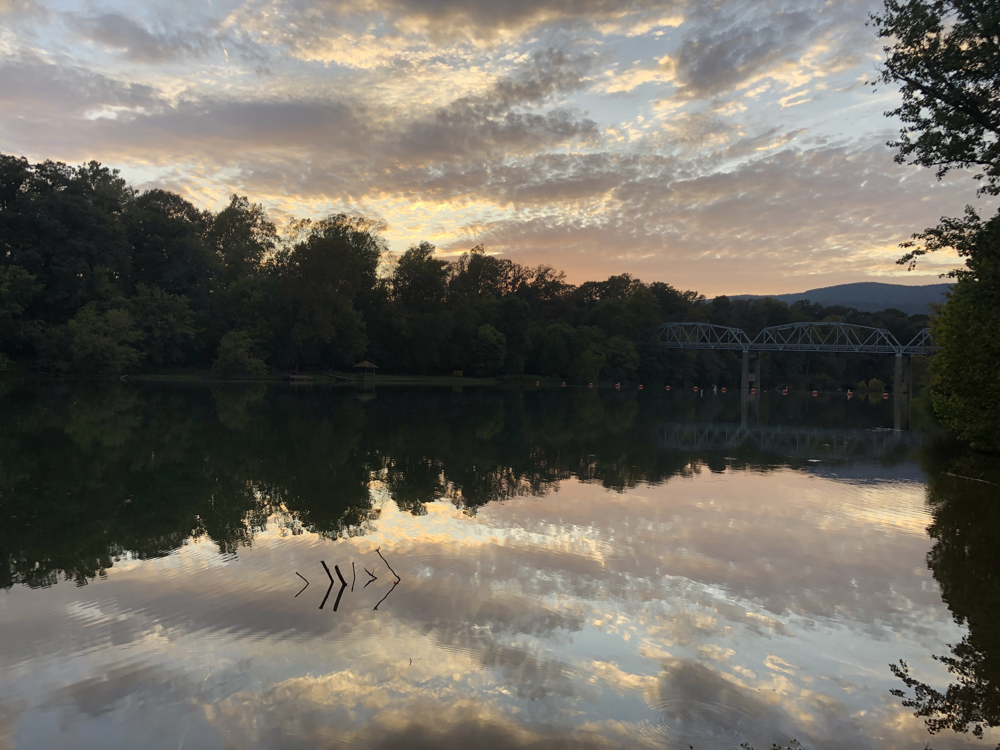
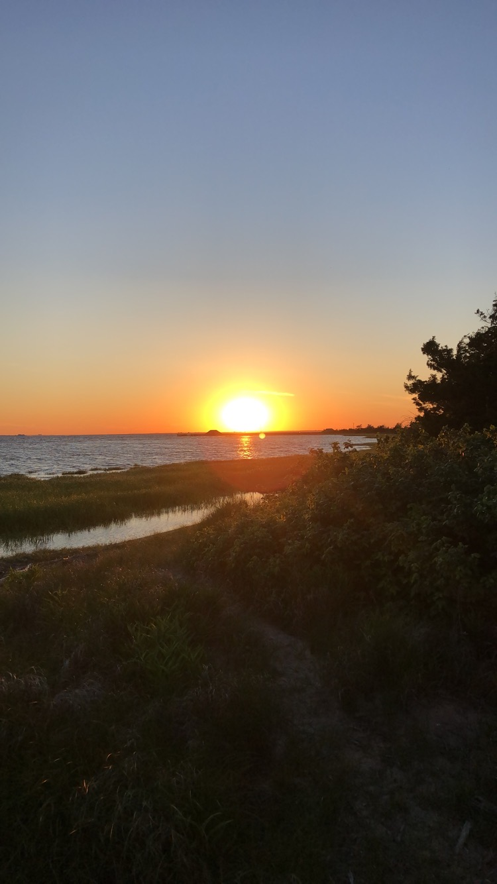

My name is Mackenzie Herrlich, I am a junior at James Madison University and I am an aspiring Graphic Designer.
I am a very open minded person and I do well when working with others but I also can be independent and stubborn at times.
I can be indecisive when it comes to making decisions because I always want to know that I am making the right one.
These pages would be used for my own personal site for a user to navigate.
The Home Page would serve as an overview for the whole site with little snippets/summaries for each page.
The Portfolio page would serve as a gallery/page full of the previous work and projects that I have done.
The Resume page would display my resume.
The Gallery page would serve as displaying artwork, projects, and other images that are inspirational to me or don't fit to the description of my portfolio.
The About Me is a page with a short biography about me.
These are some of the adjectives I would use to describe myself. Some of these I use and apply with design.
Some of the photos displayed here have my favorite colors and they also inspire some of my content.
    This website created by Devon Stank is inspirational for me because it has similar elements that I would wish to include in my own personal site.